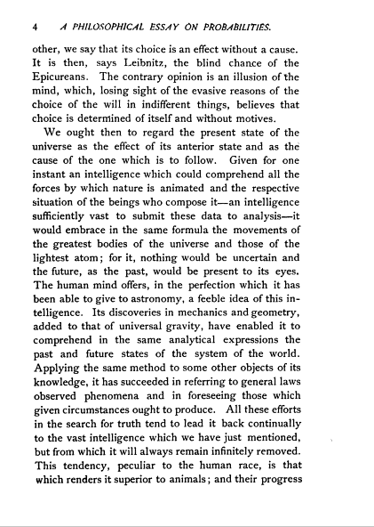
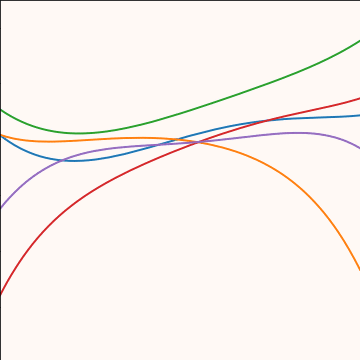
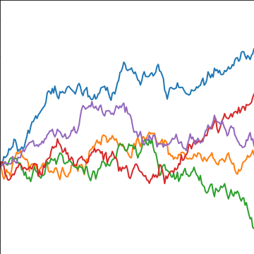
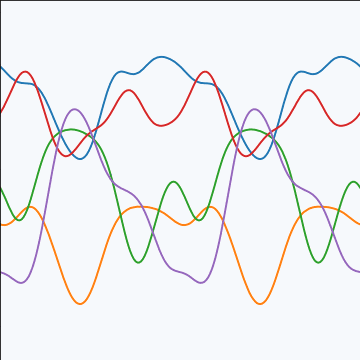
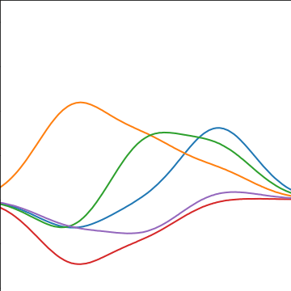
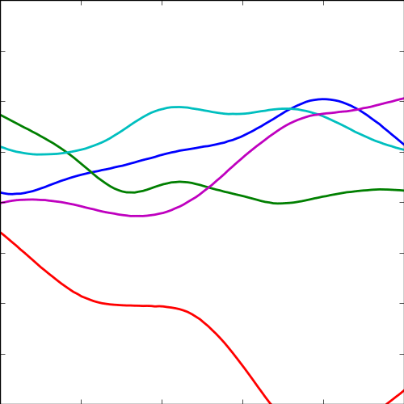

Introduction to Gaussian Processes
Gaussian Process Summer School, Sheffield

Rasmussen and Williams (2006)
What is Machine Learning?
\[ \text{data} + \text{model} \xrightarrow{\text{compute}} \text{prediction}\]
- data : observations, could be actively or passively acquired (meta-data).
- model : assumptions, based on previous experience (other data! transfer learning etc), or beliefs about the regularities of the universe. Inductive bias.
- prediction : an action to be taken or a categorization or a quality score.
- Royal Society Report: Machine Learning: Power and Promise of Computers that Learn by Example
What is Machine Learning?
\[\text{data} + \text{model} \xrightarrow{\text{compute}} \text{prediction}\]
- To combine data with a model need:
- a prediction function \(\mappingFunction(\cdot)\) includes our beliefs about the regularities of the universe
- an objective function \(\errorFunction(\cdot)\) defines the cost of misprediction.
Olympic Marathon Data
|
 Image from Wikimedia Commons http://bit.ly/16kMKHQ Image from Wikimedia Commons http://bit.ly/16kMKHQ
|
Olympic Marathon Data
Overdetermined System
\(\dataScalar = m\inputScalar + c\)
point 1: \(\inputScalar = 1\), \(\dataScalar=3\) \[ 3 = m + c \]
point 2: \(\inputScalar = 3\), \(\dataScalar=1\) \[ 1 = 3m + c \]
point 3: \(\inputScalar = 2\), \(\dataScalar=2.5\)
\[2.5 = 2m + c\]
 {
{


\(\dataScalar = m\inputScalar + c + \noiseScalar\)
point 1: \(\inputScalar = 1\), \(\dataScalar=3\) \[ 3 = m + c + \noiseScalar_1 \]
point 2: \(\inputScalar = 3\), \(\dataScalar=1\) \[ 1 = 3m + c + \noiseScalar_2 \]
point 3: \(\inputScalar = 2\), \(\dataScalar=2.5\) \[ 2.5 = 2m + c + \noiseScalar_3 \]
A Probabilistic Process
Set the mean of Gaussian to be a function. \[p \left(\dataScalar_i|\inputScalar_i\right)=\frac{1}{\sqrt{2\pi\dataStd^2}}\exp \left(-\frac{\left(\dataScalar_i-\mappingFunction\left(\inputScalar_i\right)\right)^{2}}{2\dataStd^2}\right). \]
This gives us a ‘noisy function’.
This is known as a stochastic process.
The Gaussian Density
- Perhaps the most common probability density.
\[\begin{align} p(\dataScalar| \meanScalar, \dataStd^2) & = \frac{1}{\sqrt{2\pi\dataStd^2}}\exp\left(-\frac{(\dataScalar - \meanScalar)^2}{2\dataStd^2}\right)\\& \buildrel\triangle\over = \gaussianDist{\dataScalar}{\meanScalar}{\dataStd^2} \end{align}\]
Gaussian Density
Gaussian Density
Two Important Gaussian Properties
Sum of Gaussians
Sum of Gaussian variables is also Gaussian.
\[\dataScalar_i \sim \gaussianSamp{\meanScalar_i}{\sigma_i^2}\]
And the sum is distributed as
\[\sum_{i=1}^{\numData} \dataScalar_i \sim \gaussianSamp{\sum_{i=1}^\numData \meanScalar_i}{\sum_{i=1}^\numData \sigma_i^2}\]
(Aside: As sum increases, sum of non-Gaussian, finite variance variables is also Gaussian because of central limit theorem.)
Scaling a Gaussian
Scaling a Gaussian leads to a Gaussian.
\[\dataScalar \sim \gaussianSamp{\meanScalar}{\sigma^2}\]
And the scaled variable is distributed as
\[\mappingScalar \dataScalar \sim \gaussianSamp{\mappingScalar\meanScalar}{\mappingScalar^2 \sigma^2}.\]
Regression Examples
- Predict a real value, \(\dataScalar_i\) given some inputs \(\inputVector_i\).
- Predict quality of meat given spectral measurements (Tecator data).
- Radiocarbon dating, the C14 calibration curve: predict age given quantity of C14 isotope.
- Predict quality of different Go or Backgammon moves given expert rated training data.
Underdetermined System
- What about two unknowns and one observation? \[\dataScalar_1 = m\inputScalar_1 + c\]
Can compute \(m\) given \(c\). \[m = \frac{\dataScalar_1 - c}{\inputScalar}\]
Underdetermined System
Overdetermined System
With two unknowns and two observations: \[\begin{aligned} \dataScalar_1 = & m\inputScalar_1 + c\\ \dataScalar_2 = & m\inputScalar_2 + c \end{aligned}\]
Additional observation leads to overdetermined system. \[\dataScalar_3 = m\inputScalar_3 + c\]
Overdetermined System
- This problem is solved through a noise model \(\noiseScalar \sim \gaussianSamp{0}{\dataStd^2}\) \[\begin{aligned} \dataScalar_1 = m\inputScalar_1 + c + \noiseScalar_1\\ \dataScalar_2 = m\inputScalar_2 + c + \noiseScalar_2\\ \dataScalar_3 = m\inputScalar_3 + c + \noiseScalar_3 \end{aligned}\]
Noise Models
- We aren’t modeling entire system.
- Noise model gives mismatch between model and data.
- Gaussian model justified by appeal to central limit theorem.
- Other models also possible (Student-\(t\) for heavy tails).
- Maximum likelihood with Gaussian noise leads to least squares.
Probability for Under- and Overdetermined
- To deal with overdetermined introduced probability distribution for ‘variable’, \({\noiseScalar}_i\).
- For underdetermined system introduced probability distribution for ‘parameter’, \(c\).
- This is known as a Bayesian treatment.
Different Types of Uncertainty
- The first type of uncertainty we are assuming is aleatoric uncertainty.
- The second type of uncertainty we are assuming is epistemic uncertainty.
Aleatoric Uncertainty
- This is uncertainty we couldn’t know even if we wanted to. e.g. the result of a football match before it’s played.
- Where a sheet of paper might land on the floor.
Epistemic Uncertainty
- This is uncertainty we could in principle know the answer too. We just haven’t observed enough yet, e.g. the result of a football match after it’s played.
- What colour socks your lecturer is wearing.
Bayesian Regression
Prior Distribution
- Bayesian inference requires a prior on the parameters.
- The prior represents your belief before you see the data of the likely value of the parameters.
- For linear regression, consider a Gaussian prior on the intercept:
\[c \sim \gaussianSamp{0}{\alpha_1}\]
Posterior Distribution
- Posterior distribution is found by combining the prior with the likelihood.
- Posterior distribution is your belief after you see the data of the likely value of the parameters.
- The posterior is found through Bayes’ Rule \[ p(c|\dataScalar) = \frac{p(\dataScalar|c)p(c)}{p(\dataScalar)} \]
\[ \text{posterior} = \frac{\text{likelihood}\times \text{prior}}{\text{marginal likelihood}}. \]
Bayes Update
Stages to Derivation of the Posterior
- Multiply likelihood by prior
- they are “exponentiated quadratics”, the answer is always also an exponentiated quadratic because \(\exp(a^2)\exp(b^2) = \exp(a^2 + b^2)\).
- Complete the square to get the resulting density in the form of a Gaussian.
- Recognise the mean and (co)variance of the Gaussian. This is the estimate of the posterior.
Multivariate System
- For general Bayesian inference need multivariate priors.
- E.g. for multivariate linear regression:
\[\dataScalar_i = \sum_j \weightScalar_j \inputScalar_{i, j} + \noiseScalar_i,\]
\[\dataScalar_i = \weightVector^\top \inputVector_{i, :} + \noiseScalar_i.\]
(where we’ve dropped \(c\) for convenience), we need a prior over \(\weightVector\).
Multivariate System
- This motivates a multivariate Gaussian density.
- We will use the multivariate Gaussian to put a prior directly on the function (a Gaussian process).
Multivariate Bayesian Regression
Multivariate Regression Likelihood
- Noise corrupted data point \[\dataScalar_i = \weightVector^\top \inputVector_{i, :} + {\noiseScalar}_i\]
- Multivariate regression likelihood: \[p(\dataVector| \inputMatrix, \weightVector) = \frac{1}{\left(2\pi {\dataStd}^2\right)^{\numData/2}} \exp\left(-\frac{1}{2{\dataStd}^2}\sum_{i=1}^{\numData}\left(\dataScalar_i - \weightVector^\top \inputVector_{i, :}\right)^2\right)\]
- Now use a multivariate Gaussian prior: \[p(\weightVector) = \frac{1}{\left(2\pi \alpha\right)^\frac{\dataDim}{2}} \exp \left(-\frac{1}{2\alpha} \weightVector^\top \weightVector\right)\]
Two Dimensional Gaussian Distribution
Two Dimensional Gaussian
- Consider height, \(h/m\) and weight, \(w/kg\).
- Could sample height from a distribution: \[ p(h) \sim \gaussianSamp{1.7}{0.0225}. \]
- And similarly weight: \[ p(w) \sim \gaussianSamp{75}{36}. \]
Height and Weight Models
Independence Assumption
- We assume height and weight are independent.
\[ p(w, h) = p(w)p(h). \]
Sampling Two Dimensional Variables
Body Mass Index
- In reality they are dependent (body mass index) \(= \frac{w}{h^2}\).
- To deal with this dependence we introduce correlated multivariate Gaussians.
Sampling Two Dimensional Variables
Independent Gaussians
\[ p(w, h) = p(w)p(h) \]
Independent Gaussians
\[ p(w, h) = \frac{1}{\sqrt{2\pi \dataStd_1^2}\sqrt{2\pi\dataStd_2^2}} \exp\left(-\frac{1}{2}\left(\frac{(w-\meanScalar_1)^2}{\dataStd_1^2} + \frac{(h-\meanScalar_2)^2}{\dataStd_2^2}\right)\right) \]
Independent Gaussians
\[ p(w, h) = \frac{1}{\sqrt{2\pi\dataStd_1^22\pi\dataStd_2^2}} \exp\left(-\frac{1}{2}\left(\begin{bmatrix}w \\ h\end{bmatrix} - \begin{bmatrix}\meanScalar_1 \\ \meanScalar_2\end{bmatrix}\right)^\top\begin{bmatrix}\dataStd_1^2& 0\\0&\dataStd_2^2\end{bmatrix}^{-1}\left(\begin{bmatrix}w \\ h\end{bmatrix} - \begin{bmatrix}\meanScalar_1 \\ \meanScalar_2\end{bmatrix}\right)\right) \]
Independent Gaussians
\[ p(\dataVector) = \frac{1}{\det{2\pi \mathbf{D}}^{\frac{1}{2}}} \exp\left(-\frac{1}{2}(\dataVector - \meanVector)^\top\mathbf{D}^{-1}(\dataVector - \meanVector)\right) \]
Correlated Gaussian
Form correlated from original by rotating the data space using matrix \(\rotationMatrix\).
\[ p(\dataVector) = \frac{1}{\det{2\pi\mathbf{D}}^{\frac{1}{2}}} \exp\left(-\frac{1}{2}(\dataVector - \meanVector)^\top\mathbf{D}^{-1}(\dataVector - \meanVector)\right) \]
Correlated Gaussian
Form correlated from original by rotating the data space using matrix \(\rotationMatrix\).
\[ p(\dataVector) = \frac{1}{\det{2\pi\mathbf{D}}^{\frac{1}{2}}} \exp\left(-\frac{1}{2}(\rotationMatrix^\top\dataVector - \rotationMatrix^\top\meanVector)^\top\mathbf{D}^{-1}(\rotationMatrix^\top\dataVector - \rotationMatrix^\top\meanVector)\right) \]
Correlated Gaussian
Form correlated from original by rotating the data space using matrix \(\rotationMatrix\).
\[ p(\dataVector) = \frac{1}{\det{2\pi\mathbf{D}}^{\frac{1}{2}}} \exp\left(-\frac{1}{2}(\dataVector - \meanVector)^\top\rotationMatrix\mathbf{D}^{-1}\rotationMatrix^\top(\dataVector - \meanVector)\right) \] this gives a covariance matrix: \[ \covarianceMatrix^{-1} = \rotationMatrix \mathbf{D}^{-1} \rotationMatrix^\top \]
Correlated Gaussian
Form correlated from original by rotating the data space using matrix \(\rotationMatrix\).
\[ p(\dataVector) = \frac{1}{\det{2\pi\covarianceMatrix}^{\frac{1}{2}}} \exp\left(-\frac{1}{2}(\dataVector - \meanVector)^\top\covarianceMatrix^{-1} (\dataVector - \meanVector)\right) \] this gives a covariance matrix: \[ \covarianceMatrix = \rotationMatrix \mathbf{D} \rotationMatrix^\top \]
Multivariate Gaussian Properties
Recall Univariate Gaussian Properties
- Sum of Gaussian variables is also Gaussian.
\[\dataScalar_i \sim \gaussianSamp{\meanScalar_i}{\dataStd_i^2}\]
\[\sum_{i=1}^{\numData} \dataScalar_i \sim \gaussianSamp{\sum_{i=1}^\numData \meanScalar_i}{\sum_{i=1}^\numData\dataStd_i^2}\]
Recall Univariate Gaussian Properties
- Scaling a Gaussian leads to a Gaussian.
\[\dataScalar \sim \gaussianSamp{\meanScalar}{\dataStd^2}\]
\[\mappingScalar\dataScalar\sim \gaussianSamp{\mappingScalar\meanScalar}{\mappingScalar^2 \dataStd^2}\]
Multivariate Consequence
If \[\inputVector \sim \gaussianSamp{\meanVector}{\covarianceMatrix}\]
And \[\dataVector= \mappingMatrix\inputVector\]
Then \[\dataVector \sim \gaussianSamp{\mappingMatrix\meanVector}{\mappingMatrix\covarianceMatrix\mappingMatrix^\top}\]
Linear Gaussian Models
Gaussian processes are initially of interest because 1. linear Gaussian models are easier to deal with 2. Even the parameters within the process can be handled, by considering a particular limit.
Multivariate Gaussian Properties
If \[ \dataVector = \mappingMatrix \inputVector + \noiseVector, \]
Assume \[\begin{align} \inputVector & \sim \gaussianSamp{\meanVector}{\covarianceMatrix}\\ \noiseVector & \sim \gaussianSamp{\zerosVector}{\covarianceMatrixTwo} \end{align}\]
Then \[ \dataVector \sim \gaussianSamp{\mappingMatrix\meanVector}{\mappingMatrix\covarianceMatrix\mappingMatrix^\top + \covarianceMatrixTwo}. \] If \(\covarianceMatrixTwo=\dataStd^2\eye\), this is Probabilistic Principal Component Analysis (Tipping and Bishop, 1999), because we integrated out the inputs (or latent variables they would be called in that case).
Non linear on Inputs
- Set each activation function computed at each data point to be
\[ \activationScalar_{i,j} = \activationScalar(\mappingVector^{(1)}_{j}, \inputVector_{i}) \] Define design matrix \[ \activationMatrix = \begin{bmatrix} \activationScalar_{1, 1} & \activationScalar_{1, 2} & \dots & \activationScalar_{1, \numHidden} \\ \activationScalar_{1, 2} & \activationScalar_{1, 2} & \dots & \activationScalar_{1, \numData} \\ \vdots & \vdots & \ddots & \vdots \\ \activationScalar_{\numData, 1} & \activationScalar_{\numData, 2} & \dots & \activationScalar_{\numData, \numHidden} \end{bmatrix}. \]
Matrix Representation of a Neural Network
\[\dataScalar\left(\inputVector\right) = \activationVector\left(\inputVector\right)^\top \mappingVector + \noiseScalar\]
\[\dataVector = \activationMatrix\mappingVector + \noiseVector\]
\[\noiseVector \sim \gaussianSamp{\zerosVector}{\dataStd^2\eye}\]
Prior Density
- Define
\[ \mappingVector \sim \gaussianSamp{\zerosVector}{\alpha\eye}, \]
- Rules of multivariate Gaussians to see that,
\[ \dataVector \sim \gaussianSamp{\zerosVector}{\alpha \activationMatrix \activationMatrix^\top + \dataStd^2 \eye}. \]
\[ \kernelMatrix = \alpha \activationMatrix \activationMatrix^\top + \dataStd^2 \eye. \]
Joint Gaussian Density
- Elements are a function \(\kernel_{i,j} = \kernel\left(\inputVector_i, \inputVector_j\right)\)
\[ \kernelMatrix = \alpha \activationMatrix \activationMatrix^\top + \dataStd^2 \eye. \]
Covariance Function
\[ \kernel_\mappingFunction\left(\inputVector_i, \inputVector_j\right) = \alpha \activationVector\left(\mappingMatrix_1, \inputVector_i\right)^\top \activationVector\left(\mappingMatrix_1, \inputVector_j\right) \]
- formed by inner products of the rows of the design matrix.
Gaussian Process
Instead of making assumptions about our density over each data point, \(\dataScalar_i\) as i.i.d.
make a joint Gaussian assumption over our data.
covariance matrix is now a function of both the parameters of the activation function, \(\mappingMatrix_1\), and the input variables, \(\inputMatrix\).
Arises from integrating out \(\mappingVector^{(2)}\).
Basis Functions
- Can be very complex, such as deep kernels, (Cho and Saul, 2009) or could even put a convolutional neural network inside.
- Viewing a neural network in this way is also what allows us to beform sensible batch normalizations (Ioffe and Szegedy, 2015).
Distributions over Functions
x
Sampling a Function
Multi-variate Gaussians
- We will consider a Gaussian with a particular structure of covariance matrix.
- Generate a single sample from this 25 dimensional Gaussian density, \[ \mappingFunctionVector=\left[\mappingFunction_{1},\mappingFunction_{2}\dots \mappingFunction_{25}\right]. \]
- We will plot these points against their index.
Gaussian Distribution Sample
Prediction of \(\mappingFunction_{2}\) from \(\mappingFunction_{1}\)
Uluru
Prediction with Correlated Gaussians
- Prediction of \(\mappingFunction_2\) from \(\mappingFunction_1\) requires conditional density.
- Conditional density is also Gaussian. \[ p(\mappingFunction_2|\mappingFunction_1) = \gaussianDist{\mappingFunction_2}{\frac{\kernelScalar_{1, 2}}{\kernelScalar_{1, 1}}\mappingFunction_1}{ \kernelScalar_{2, 2} - \frac{\kernelScalar_{1,2}^2}{\kernelScalar_{1,1}}} \] where covariance of joint density is given by \[ \kernelMatrix = \begin{bmatrix} \kernelScalar_{1, 1} & \kernelScalar_{1, 2}\\ \kernelScalar_{2, 1} & \kernelScalar_{2, 2}.\end{bmatrix} \]
Prediction of \(\mappingFunction_{8}\) from \(\mappingFunction_{1}\)
Where Did This Covariance Matrix Come From?
\[ k(\inputVector, \inputVector^\prime) = \alpha \exp\left(-\frac{\left\Vert \inputVector - \inputVector^\prime\right\Vert^2_2}{2\lengthScale^2}\right)\]
|
Computing Covariance
Computing Covariance
Computing Covariance
Polynomial Covariance
|  |
Brownian Covariance
\[ \kernelScalar(t, t^\prime) = \alpha \min(t, t^\prime) \]
|  |
Periodic Covariance
|  |
Covariance Functions
RBF Basis Functions
\[ \basisFunction_k(\inputScalar) = \exp\left(-\frac{\ltwoNorm{\inputScalar-\meanScalar_k}^{2}}{\lengthScale^{2}}\right). \]
\[ \meanVector = \begin{bmatrix} -1 \\ 0 \\ 1\end{bmatrix}, \]
\[ \kernelScalar\left(\inputVals,\inputVals^{\prime}\right)=\alpha\basisVector(\inputVals)^\top \basisVector(\inputVals^\prime). \]
Basis Function Covariance
|  |
Selecting Number and Location of Basis
- Need to choose
- location of centers
- number of basis functions Restrict analysis to 1-D input, \(\inputScalar\).
- Consider uniform spacing over a region:
Uniform Basis Functions
Set each center location to \[\locationScalar_k = a+\Delta\locationScalar\cdot (k-1).\]
Specify the basis functions in terms of their indices, \[\begin{aligned} \kernelScalar\left(\inputScalar_i,\inputScalar_j\right) = &\alpha^\prime\Delta\locationScalar \sum_{k=1}^{\numBasisFunc} \exp\Bigg( -\frac{\inputScalar_i^2 + \inputScalar_j^2}{2\rbfWidth^2}\\ & - \frac{2\left(a+\Delta\locationScalar\cdot (k-1)\right) \left(\inputScalar_i+\inputScalar_j\right) + 2\left(a+\Delta\locationScalar \cdot (k-1)\right)^2}{2\rbfWidth^2} \Bigg) \end{aligned}\]
where we’ve scaled variance of process by \(\Delta\locationScalar\).
Infinite Basis Functions
Take \[ \locationScalar_1=a \ \text{and}\ \locationScalar_\numBasisFunc=b \ \text{so}\ b= a+ \Delta\locationScalar\cdot(\numBasisFunc-1) \]
This implies \[ b-a = \Delta\locationScalar (\numBasisFunc -1) \] and therefore \[ \numBasisFunc = \frac{b-a}{\Delta \locationScalar} + 1 \]
Take limit as \(\Delta\locationScalar\rightarrow 0\) so \(\numBasisFunc \rightarrow \infty\) where we have used \(a + k\cdot\Delta\locationScalar\rightarrow \locationScalar\).
Result
- Performing the integration leads to \[\begin{aligned} \kernelScalar(\inputScalar_i,&\inputScalar_j) = \alpha^\prime \sqrt{\pi\rbfWidth^2} \exp\left( -\frac{\left(\inputScalar_i-\inputScalar_j\right)^2}{4\rbfWidth^2}\right)\\ &\times \frac{1}{2}\left[\text{erf}\left(\frac{\left(b - \frac{1}{2}\left(\inputScalar_i + \inputScalar_j\right)\right)}{\rbfWidth} \right)- \text{erf}\left(\frac{\left(a - \frac{1}{2}\left(\inputScalar_i + \inputScalar_j\right)\right)}{\rbfWidth} \right)\right], \end{aligned}\]
- Now take limit as \(a\rightarrow -\infty\) and \(b\rightarrow \infty\) \[\kernelScalar\left(\inputScalar_i,\inputScalar_j\right) = \alpha\exp\left( -\frac{\left(\inputScalar_i-\inputScalar_j\right)^2}{4\rbfWidth^2}\right).\] where \(\alpha=\alpha^\prime \sqrt{\pi\rbfWidth^2}\).
Infinite Feature Space
- An RBF model with infinite basis functions is a Gaussian process.
- The covariance function is given by the covariance function. \[\kernelScalar\left(\inputScalar_i,\inputScalar_j\right) = \alpha \exp\left( -\frac{\left(\inputScalar_i-\inputScalar_j\right)^2}{4\rbfWidth^2}\right).\]
Infinite Feature Space
- An RBF model with infinite basis functions is a Gaussian process.
- The covariance function is the exponentiated quadratic (squared exponential).
- Note: The functional form for the covariance function and basis functions are similar.
- this is a special case,
- in general they are very different
MLP Covariance
|  |
Sinc Covariance
References
Cho, Y., Saul, L.K., 2009. Kernel methods for deep learning, in: Bengio, Y., Schuurmans, D., Lafferty, J.D., Williams, C.K.I., Culotta, A. (Eds.), Advances in Neural Information Processing Systems 22. Curran Associates, Inc., pp. 342–350.
Ioffe, S., Szegedy, C., 2015. Batch normalization: Accelerating deep network training by reducing internal covariate shift, in: Bach, F., Blei, D. (Eds.), Proceedings of the 32nd International Conference on Machine Learning, Proceedings of Machine Learning Research. PMLR, Lille, France, pp. 448–456.
Rasmussen, C.E., Williams, C.K.I., 2006. Gaussian processes for machine learning. mit, Cambridge, MA.
Tipping, M.E., Bishop, C.M., 1999. Probabilistic principal component analysis. Journal of the Royal Statistical Society, B 6, 611–622. https://doi.org/doi:10.1111/1467-9868.00196